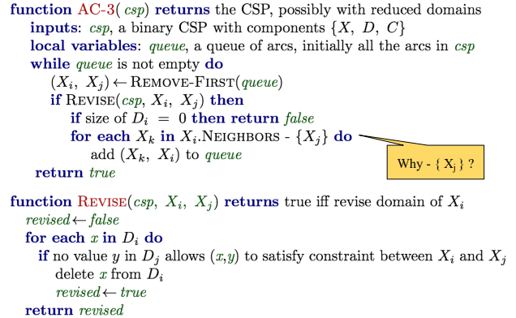
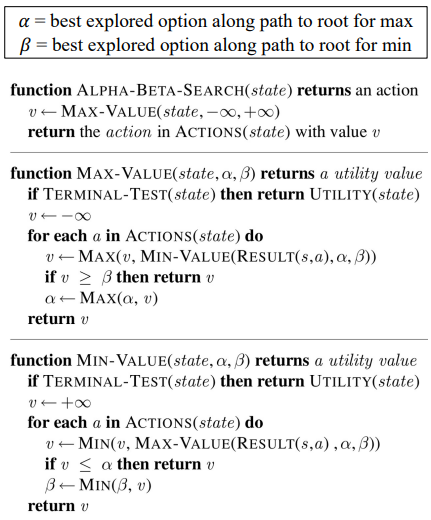
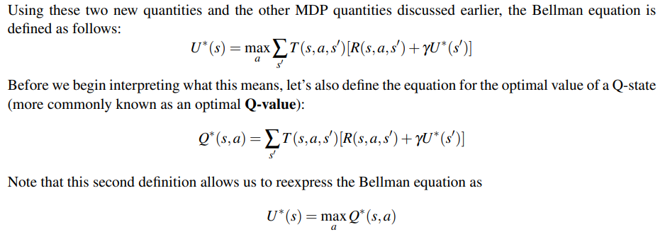
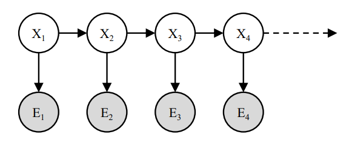
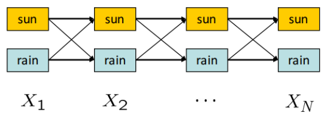
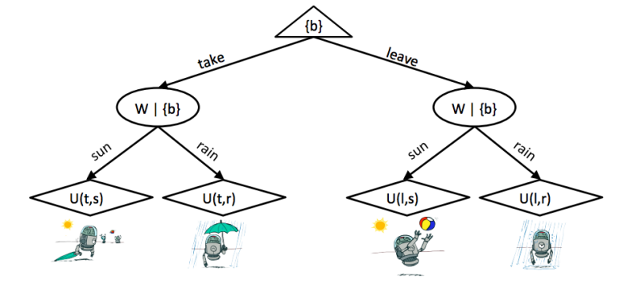

Artificial Intelligence 笔记
COMP3270 笔记。当看到 agenda 是每周一次 3.5 hr 的 lecture 时，我就知道这注定是一节自学课了。
教授的 background 很牛，学术成果丰硕，本人也超级亲切友好，奈何课程我真的有点听不进去。这再次证明了科研和教学真的是井水不犯河水的两码事。
This article is a self-administered course note.
It will NOT cover any exam or assignment related content.
Uninformed Search
State Space Graph 与 Search Tree。
状态空间图用有向图对搜索问题进行建模，节点对应状态，边对应转移。搜索树则更关注搜索过程，每一条从根节点 (起始状态) 到叶子节点 (目标状态) 的路径都代表一个可能的转移路径，因此同一个状态在搜索树上可以多次出现。
盲目搜索 (Uninformed Search)。对目标状态的位置没有认识。
- DFS。总是选取搜索树上最深的节点进行扩展。不保证 completeness 与 optimality。
- BFS。总是选取搜索树上最浅的节点进行扩展。保证 completeness，不保证 optimality。
- UCS。总是选取搜索树上 computed backward cost 最小的节点进行扩展。与 Dijkstra 的唯一区别是 uniform cost search 在首次到达目标节点后退出。保证 completeness 与 optimality。
Informed Search
Heuristic。当前状态到目标状态距离的评估，即 estimated forward cost，通常是一个放松后的原问题 (relaxed problem) 的解。例如，寻路问题的启发常常是曼哈顿距离。
- Greedy Search。总是选取搜索树上 heuristic 最小的节点进行扩展。不保证 completeness 与 optimality。
- A* Search。定义 total estimated cost \(f(n)\) 为 total backward cost \(g(n)\) 与 estimated forward cost \(h(n)\) 之和，总是选取搜索树上 cost 最小的节点 [UCS + greedy]。
保证 A* 搜索 optimality 的两个约束。admissibility 与 consistency。
- A*-TSA optimality guaranteed by admissibility \(\forall n: 0\leq h(n)\leq h^{*}(n)\)。证明见 Informed Search p.4。
- TSA (tree search) 常对同一节点进行多次扩展，效率极其低下。GSA (graph search) 引入 reached set，保证同一节点最多被扩展一次。但同时它又破坏了 A* 的最优性 (见 p.5)。
- A*-GSA optimality guaranteed by consistency \(\forall A,C:h(A)-h(C)\leq cost(A,C)\)。underestimate 边权能够保证每次扩展的路径一定最优 (见 p.6)。
Dominance。
对于两个 admissible/consistent 的 heuristic \(h_a\) 与 \(h_b\)，我们说 \(h_a\) dominate over \(h_b\) 当 \(\forall n:h_a(n)\geq h_b(n)\)。可见 heuristic 最优性 continuum 的两端为 \(h_l(n)=0\) (trivial heuristic，退化为 ucs) 与 \(h_r(n)=h^{*}(n)\) (一步到位)。
Constraint Satisfaction Problem I
约束满足问题 (Constraint Satisfaction Problem, CSPs)。CSP 是 identification problem。与 planning problem 相对，只关心具体的目标状态，不关心到达目标状态的路径。可以将 CSP 表示为 constraint graph，节点对应变量，边对应约束。
CSP 是 NP-hard 的，通过将 CSP 建模为搜索问题，再定义合适的 heuristic，使得部分 CSP 能够在 feasible 的时间内求解。解 CSP 采用的搜索策略是 backtracking search (回溯搜索)。
回溯改进 i - Filtering。根据约束，对未赋值的变量的值域 (domain of unassigned variables) 进行剪枝 (pruning)。
- naive filtering - Forward checking。每次赋值变量后，对共享约束的其他变量剪枝。
- AC-3 algorithm (Arc Consistency Algorithm #3)。对于 arc \(x\to y\)，我们说它是相容的，当对 \(x\) 值域中的每个值，\(y\) 值域中都存在对应的不违背约束的值。AC-3 算法在每次赋值变量后，enforces arc consistency 得到所有未赋值变量的满足约束的最小的值域。能够更早的触发回溯，相应的增加了计算成本。

回溯改进 ii - Ordering。规定 variables and values involved 的优先级。
Variable Ordering: choose which variable to assign values with? - fail-first heuristic
- Minimum Remaining Values (MRV): the variable with fewest legal left values.
- tie-breaker of MRV (degree heuristic): the variable with the most constraints on remaining variables.
Value Ordering: choose which value to assign to a variable?
- Least Constraining Value (LCV): the value that rules out the fewest values in the remaining variables
关于 fail-first heuristic 与 MRV：受到约束最多的变量也最容易耗尽所有可能的值从而引起回溯，所以应优先进行赋值。关于 LCV：尽量维持剩余变量面对约束的灵活性。
Constraint Satisfaction Problem II
CSP 的另一种搜索策略：Local Search (局部搜索)。从一个随机状态开始进行迭代改进 (iterative improvement)；即随机的选择一个与约束产生冲突的变量，对其重新赋值，使得其与尽量少的约束产生冲突。不断进行这个过程直至所有的约束都得到满足。
- Hill-Climbing Search (爬山搜索)。从当前状态开始，不断地朝 objective function 增加的方向往相邻状态转移。容易陷入 local maxima 与 plateaux。
- Simulated Annealing Search (模拟退火)。从当前状态开始随机移动。若这次移动使得 objective function 增加，移动；若 objective function 减少，以概率 \(p\) 移动。\(p\) 被温度决定：该温度的值初始较高，随着迭代的进行将逐渐冷却。 这意味着搜索允许在一开始 take more "bad moves".
- Genetic Algorithms (遗传算法)。
Search with Other Agents I
存在敌手 (adversaries) 的搜索问题是 adversarial search problems，或者更加喜闻乐见的，games。与普通的搜索问题相比，对抗搜索的解不是一个完整的解路径，而是一个 strategy 或 policy。
确定性零和博弈 (deterministic zero-sum games) 的搜索策略：minimax 算法。即，后序遍历 (postorder traversal) 博弈树，计算出所有节点的 utility。节点 \(s\) 的 utility，或 \(\text{Minimax}(s)\)，定义为玩家从 \(s\) 出发能获得的 best possible outcome。
minimax 算法得到的 strategy 在与一个理性敌手 (rational/optimal adversary) 博弈时是最优的。
minimax 算法改进 i - \(\alpha\)-\(\beta\) pruning。

minimax 算法改进 ii - evaluation function。估价函数的设计被广泛应用在 depth-limited minimax 中，它仅遍历博弈树上深度 \(\leq l\) 的节点，实现 early termination；因此需要设计合适的估价函数，评估 non-terminal 节点的 utilities。
- 从状态 \(s\) 中提取若干特征 \(f\)，每个特征有权重 \(w\)。\(\text{eval}(s)=\sum w_if_i\)
- 两个 tradeoff：深度限制 \(l\) 与估价函数 \(e(s)\)；估价函数设计中，特征的复杂度与计算成本
- Horizon Effect：短视的估价函数可能会尝试挽回一个无法挽回的损失，从而付出更大的代价 (Search.pdf pp.144，赔了主教又折兵)
Search with Other Agents II
minimax 算法的缺陷 i - 总是假设敌手是理性的；无法处理带有 inherent randomness 的游戏 (掷骰子，棋牌游戏等)。expectimax 算法作为 minimax 算法的 generalization，通过引入 chance nodes 的概念来解决这个问题。
传统 minimax 博弈树是 maximizer 与 minimizer 交替堆叠而成的；在 expectimax 中 minimizer 被替换为 chance nodes。它所计算的是子节点的 expected utility：\(\forall \text{ chance states,} V(s)=\sum_{s\to s'}p(s'|s)V(s')\)。概率分布 \(p\) 的计算基于我们对 suboptimal adversary 的了解。
expectimax 博弈树又可以向两个方向继续推广。
- Mixed-layer types。进一步增删/修改博弈树的交替层结构，实现多个 agents 进行零和博弈。
- General games。世界上绝大多数游戏并非零和博弈。对于具有 multi-agent utilities 的游戏，在博弈树中引入 utility vector 实现多个 agents 进行非零和博弈，引发 agents 间更复杂的对抗与合作。
minimax 算法的缺陷 ii - 无法处理 branching factor \(b\) 较大的游戏 (围棋)。Monte Carlo Tree Search (MCTS) 引入频率模拟概率的思想，进行 evaluation by rollouts 与 selective search (仅探索 parts of the tree)，对这类问题取得了较好的效果。
UCB algorithm 常作为 MCTS UCT 算法扩展搜索树的 criterion，它反映了某个节点 promising 与 uncertain 间的 tradeoff。 当 rollout 次数 \(N\to \infty\) 时，MCTS UCT 的表现向 minimax agent 逼近。
1 | # return next best move |
Markov Decision Processes
Non-deterministic search。Environment may subject the agent's actions to being non-deterministic；即，\(\text{result}(s,a)\) 将产生多个可能的后继状态 (successors)。
环境中存在一定程度的 inherent uncertainty；这类问题可被建模为 Markov decision processes (MDPs)。
- discount factor \(\gamma\)。
- transition function \(T(s,a,s')\) - 返回一个概率。
- reward function \(R(s, a, s')\) - agent 的目标是在到达 terminal state 前最大化获得的奖励之和 (discounting or not)。\(U([s_0,a_0,s_1,a_1,...])=R(s_0,a_0,s_1)+\gamma R(s_1,a_1,s_2)+\gamma^2 R(s_2,a_2,s_3)...\)
MDP 的性质。memoryless property aka Markov property。未来状态仅与当前状态有关，与状态的转移历史无关。即 \(T(s,a,s')=P(s'|s,a)\)。
MDP 搜索树。在 agent 采取行动之后，总有象征随机环境 (stochastic environment) 的 Q-states aka action states 对 agent 的行动施加影响，生成多个可能的后继状态。与 expectimax 中的 chance nodes 作用几乎一致：chance nodes 代表的是随机敌手，Q-states 代表的是随机环境。Q-states 不计入 time step。
为 agent 提供动机 (motivation) 防止 infinite utility。
- finite horizons。agent 应在限制的时间步之内取得最大奖励。
- discounting。设置 discount factor \(\gamma\)，agent 获得的奖励逐步衰减。
MDP 的解。决策 policy \(\pi:S\to A\)，对于给定的状态 \(s\)，返回在当前状态应采取的行动 \(\pi(s)=a\)。MDP 的最优决策 \(\pi^{*}\) 将引导向 maximum expected total reward/utility。
Bellman Equation。定义状态 \(s\) 的最优 utility \(U^{*}(s)\) 与 Q-state \((s,a)\) 的最优 utility \(Q^{*}(s,a)\)：

根据 Bellman Equation 能够得到一个 DP 求解的方法，称为 value iteration。它通过递推计算 time-limited values 的方式 (这是 finite horizons 的自然要求)，得到任意状态 \(s\) 在 \(k\) 个时间步内能够取得的最大 discounting reward。
- 初始化 \(U_0(s)=0, \forall s\in S\)。这很自然，剩下 \(0\) 步时无奖励。
- 根据 Bellman 方程递推。\(\forall s\in S, U_{k+1}(s)\leftarrow \max_a \sum_{s'}T(s,a,s')[R(s,a,s')+\gamma U_k(s')]\)。
- 重复递推直至收敛。terminate when \(U_{k+1}(s)=U_k(s)\)。可以证明此时 \(U_k(s)=U^{*}(s)\)，且当 \(\gamma\in (0,1]\) 时必收敛 (见 note7 MDP-I p.7。intuition 是当 \(\gamma<1\) 时树的深度越大，其值越可忽略)。
到这里所有的概念都很好理解，但我总觉得哪里不太对劲。
仔细思考后我发现了诡异的源头：这不就是 expectimax 吗？普通 states 对应 maximizers，Q-states 对应 chance nodes，time-limited values 对应 depth-limited minimax。
这些近乎同一的概念很自然的引出了怀疑：为什么不直接用 expectimax 解 MDP，而要采用基于 DP 的 value iteration？我苦思冥想良久，一路追根溯源到了 CS188 2012 年的 sources，终于找到了答案。value iteration 是对 MDP 搜索树结构的 exploitation，它将同一层的相同状态节点压缩到了一起，形成了一个具有深度的搜索图。
Value iteration is essentially a graph search version of Expectimax, but
- there are rewards in every step (rather than a utility just in the terminal node)
- ran bottom-up (rather than recursively)
- can handle infinite duration game
Policy extraction, Q-value iteration 与 policy iteration 是几个比较同质化的概念。它们探讨的是在得到 \(U^{*}(s)\) 后如何 derive 出最优策略 \(\pi^{*}(s)\)。这个问题的答案即所谓的策略提取，非常简单：
- Policy extraction. \(\pi^{*}(s)=\text{argmax}_a Q^{*}(s,a)=\text{argmax}_a \sum_{s'}T(s,a,s')[R(s,a,s')+\gamma U^{*}(s')]\)
- Q-value iteration. 可以发现，仅需计算 optimal Q-values 就能满足 policy extraction 的需要。于是把 value iteration 替换为 Q-value iteration \(Q_{k+1}(s,a)=\sum_{s'}T(s,a,s')[R(s,a,s')+\gamma \max_{a'} Q_{k}(s',a')]\)。与 value iteration 唯一的区别是 \(\max\) 的位置，这是因为 take actions 与 transition 是一个先后的过程。
Value/Q-value iteration 的复杂度是 \(O(S^2A)\) 级别，计算花销还是挺大的。但 policy extraction 只关心 \(\text{argmax}\)，这说明许多 values 的计算其实是 overcomputation；optimal policy 的收敛速度其实会比 optimal value 快很多。既然如此，不如直接在 policy 层面上进行迭代，这就是 policy iteration。
Policy iteration 的三个步骤：
- Policy initialization. 选取一个初始策略 \(\pi_0\)。合适的选择能够加速收敛。
- Policy evaluation. 对所有状态 \(s\)，计算 \(U^{\pi_i}(s)=\sum_{s'}T(s,\pi_i(s),s')[R(s,\pi_i(s),s')+\gamma U^{\pi_i}(s')]\)。注意这里的计算是 expectimax 式 (top-down) 而非 value iteration 式 (bottom-up)。可以采用后者，但实际中前者速度较快。注意到策略评估的复杂度是 \(O(S^2)\)：因为初始策略的存在保证了一个状态 \(s\) 对应一个 action \(\pi_i(s)\)。
- Policy improvement. 实际上就是迭代啦！\(\pi_{i+1}=\text{argmax}_a \sum_{s'}T(s,a,s')[R(s,a,s')+\gamma U^{\pi_i}(s')]\)。迭代到 \(\pi_{i+1}=\pi_i\) 时收敛到最优策略 \(\pi^{*}\)。复杂度是 \(O(S^2A)\)，和 value iteration 一样，但迭代次数一般会减少很多。
Reinforcement Learning I
一些名词。
- offline planning (离线规划)。agent 拥有对 transitions \(T\) 与 rewards \(R\) 的完整知识。
- online planning (在线规划)。与 offline planning 相对。
- 在 online planning 下解 MDP 问题: explore, learn then exploit。
- explore: agent 不断与环境交互，得到若干 feedback。
- learn: 即 reinforcement learning，从 feedback 中学到 optimal policy。
- exploit: 使用学到的 policy 取得尽量多的 reward。
- sample。feedback 的基本单元。agent 在 \(s\) 采取行动 \(a\)，来到 \(s'\)，获得奖励 \(r\)，获得 sample \((s,a,s',r)\)。
- episode。一次 explore 收集到的 collections of samples 是一个 episode。
Model-based learning。通过 feedback 计算 \(\hat{T},\hat{R}\) (对真实 \(T,R\) 的估计)。\(\hat{T}(s,a,s')=n(s,a,s')/n(s,a)\)，\(\hat{R}\) 则可以准确得到。根据大数定理，counting 次数越多，得到的 \(\hat{T}\) 越准确。
- 得到 \(\hat{T},\hat{R}\) 后，问题转化为 offline planning，使用 value/policy iteration 等方法得到 \(\pi_{exploit}\) 即可。
- Model-based learning 容易理解，效率也较高，唯一的问题是需要大量的空间存储 episodes。
Model-free learning。不计算 \(T,R\)，直接从 feedback 中学习最优策略 \(\pi^{*}\) 。无模型学习分为两种类型：
- Passive reinforcement learning - policy evaluation 是 model-free 的，但随后的 policy extraction 环节还是离不开对 \(T,R\) 的 estimation。代表方法：direct evaluation, TD evaluation。
- Active reinforcement learning - 获取 \(\pi^{*}\) 的全过程均是 model-free 的。以 Q-learning 为代表。
Direct evaluation。非常朴素的想法。在探索过程中维护一个 table，表头为 \((s, \text{total reward}, \text{times visited})\)。在决策 \(\pi\) 下 agent 不断游走，更新 table，最后计算 \(U^{\pi}(s)=\text{total} \ \text{reward}/\text{times} \ \text{visited}\)。同样根据大数定理，探索的 episodes 越多，得到的 \(U^{\pi}\) 越准确。
Temporal difference evaluation。引入 exponential moving average 迭代的更新 \(U^{\pi}(s)\)，与 direct evaluation 相比，不仅需要的 episodes 更少，收敛速度还会大幅加快。初始化 \(U_0^{\pi}=0\)，在时间步 \(k\)：
- agent 游走，收集 \(\text{sample}_k(s)=R(s,\pi(s),s')+\gamma U_{k-1}^{\pi}(s')\)。其中 \(\gamma\) 是一个 discount。
- 更新 estimate \(U^{\pi}_k(s)\leftarrow (1-\alpha)U_{k-1}^{\pi}(s)+\alpha\cdot \text{sample}_{k}(s)\)。
展开第二个式子，可以发现 TD learning 的妙处：\(U_k^{\pi}\leftarrow \alpha [\sum_{i=1}^k (1-\alpha)^{k-i}\text{sample}_i]\)。随着时间步的增加，较早版本的 sample 获得的权重以指数级别下降；而较早版本的 sample 通常是不准确的。正是这一点加速了 \(U^{\pi}\) 的收敛。
学习率 \(\alpha\) 的设定也是有讲究的。一个典型的退火做法是初始化 \(\alpha=1\)，再缓慢的降至 \(0\)。
Q-learning。纯粹的 model-free learning。
回顾下 policy extraction：\(\pi^{*}(s)=\text{argmax}_a Q^{*}(s,a)=\text{argmax}_a \sum_{s'}T(s,a,s')[R(s,a,s')+\gamma U^{*}(s')]\)。可以看到，前两种 passive RL 方法只能得到 \(U^{\pi}\)，如果想要得到 \(\pi^{*}\)，还是离不开求解 \(\tilde{T}, \tilde{R}\) 与后续的 policy iteration。
与 Q-value iteration 的 intuition 相同，Q learning 直接从 Q values 入手求解 \(\pi^{*}\)。为了绕过 \(T,R\) 函数，又使用了与 TD learning 同样的 exponential moving average 技巧。
- agent 游走，收集 \(\text{sample}_k(s,a)=R(s,a,s')+\gamma \max_{a'}Q_{k-1}(s', a')\)。
- 更新 \(Q_k(s,a)\leftarrow (1-\alpha)Q_{k-1}(s,a)+\alpha\cdot \text{sample}_k(s,a)\).
与 TD 相同，\(Q_i\) 将逐渐向最优的 \(Q^{*}\) 收敛。不同的是，agent 在游走收集 sample 时，并不遵循一个特定的 \(\pi\)；只要 explore 的时间够长，agent 可以做出 suboptimal 甚至是 random 的移动，最后仍然能收敛到 \(Q^{*}\)。这一特点使得 Q-learning 成为一种 off-policy learning，而前两种 passive RL 被称为 on-policy learning。
Approximate Q-Learning。朴素的 Q-learning 需要储存所有 \(Q(s,a)\)，在状态数非常多的情况下会带来很大的空间压力。Approximate 方法试图学习到 \(Q(s,a)\) 的特征表示 (feature-based representation) \(\mathbf{w}^{T}\cdot \mathbf{f}(s,a)\)，其中 \(\mathbf{f}\) 是当前状态 \((s,a)\) 的特征向量，\(\mathbf{w}\) 是每个特征的权重。
这里就有一点 ML 的思想了：通过引入状态的特征表示，使得模型具有泛化 (generalizing learning experience) 的能力。当前状态的特征 \(\mathbf{f}(s,a)\) 多是人工选取的，其所占的权重 \(\mathbf{w}\) 则通过一种类似梯度下降的方式进行更新。
- 计算 \(\text{difference}=[R(s,a,s')+\gamma \max_{a'}Q(s',a')]-Q(s,a)\)，即 \(Q(s,a)\) 的 sampled estimation 与当前模型表示间的距离。
- 更新权重 \(w_i\leftarrow w_i+\alpha\cdot \text{difference}\cdot f_i(s,a)\)。
- 更新权重本质上是在更新 \(Q(s,a)\leftarrow Q(s,a)+\alpha\cdot\text{difference}\)。即，把模型拉向 sampled estimation 的方向。由于真实奖励 \(R(s,a,s')\) 的存在，这个方向在大部分情况下应当是指向 \(Q(s,a)\) 的真实值的。
这样，我们获得了一个泛化能力更强，且大幅度节省空间 (只需存储 \(\mathbf{f}, \mathbf{w}\) 与少量的 Q-values 表) 的 Q-learning 模型。
Reinforcement Learning II
之前的所有 RL 算法得到最优决策 \(\pi^{*}\) 的前提是 agent 进行了 sufficient exploration，但实际上这是一个很难达成的前提。在 RL 中一个重要的 tradeoff 是 exploration vs exploitation。如何实现这个平衡？
\(\varepsilon\)-greedy policies。以 \(\varepsilon\) 的概率随机行动 (explore)，以 \((1-\varepsilon)\) 的概率进行 exploit。
- \(\varepsilon\) 过大：即使学到了最优决策，agent 仍然表现得非常随机。
- \(\varepsilon\) 过小：agent 专注于 exploit，Q-learning 等学习算法的收敛很慢。
Exploration functions。无需手动调参，是一种 adaptive 的算法。将 Q-learning 写成如下形式： \[ Q(s,a)\leftarrow (1-\alpha)Q(s,a)+\alpha[R(s,a,s')+\gamma\max_{a'}f(s',a')] \] \(f\) 是 exploration function。一个常见的定义是： \[ f(s',a')=Q(s',a')+\frac{k}{N(s',a')} \] 当采样 sample 是 \((s,a,r,s')\) 时，\(\max_{a'}f(s',a')\) 将自动在 exploration 与 exploitation 间做出平衡。
- 在学习初期，\(k/N(s',a')\) 将提供足够的 bonus 鼓励 agent 探索陌生的区域。
- 随着学习的进行，\(k/N(s',a')\) 将趋近于 0，\(f(s',a')\) 回归到 \(Q(s',a')\)，使 exploitation 逐渐回到舞台。
Regret。另一个衡量 RL 算法的指标，它累积了学习过程中产生的 total mistake lost。某算法在 \(k\) 个时间步内学习到了最优决策 \(\pi^{*}\)，它的 regret 定义为： \[ \text{regret}=\sum_{i=1}^k R(\pi^{*})-R(\pi_i) \] 最小化 regret 不仅要求算法能够指导 agent 学到最优决策，还要求该算法本身是最优的。
举个例子，random exploration 与 exploration function 都能指导 agent 学到最优决策，但 random exploration 的 regret 远远高于 exploration function。
Probability
对概率论的 recap，只提几个陌生的概念。
joint distribution \(P(A,B,C)\)。
- chain rule. \(P(A,B,C)=P(A)P(B|A)P(C|A,B)\).
- marginal distribution 又称 summing out. \(P(A,B)=\sum_{c}P(A,B,C=c)\).
关于 independence。
- \(A,B\) is independent, \(P(A,B)=P(A)P(B)\).
- \(A,B\) is conditionally independent given \(C\), \(P(A,B|C)=P(A|C)P(B|C)\), or equivalently, \(P(A|C)\)\(=P(A|B,C)\). notation \(A\perp B|C\).
新的模型 - joint distribution table。
- 所能解决的新问题 - 观察到若干证据 \((e_1,...,e_n)\)，结果为 \((Q_1,...,Q_m)\) 的概率是？
- 解决的方式 - probabilistic inference, aka probabilistic reasoning.
Inference by Enumeration. 最 intuitive 的概率推断方式。给出 joint PDF，模型中的变量分为三类：
- Query variables \(Q_i\) - 未知变量，出现在条件概率 \(|\) 的左侧。
- Evidence variables \(e_i\) - 被观察到的值已知的变量，出现在条件概率 \(|\) 的右侧。
- Hidden variables - 在当前问题下无关的变量，需要被 summing out。
IBE 三步求解 \(P(Q_1,...,Q_m|e_1,...,e_n)\)。
- 在 joint PDF 中选出所有与 \(e\) 匹配的行。
- Sum out (marginalize) 所有隐变量。
- 最后 normalize 得到的 sub table，就能得到要求的概率分布了。
若共有 \(j\) 个变量，每个变量平均有 \(d\) 种取值，IBE 的时空复杂度均为 \(O(d^j)\)。
Markov Models
[大量公式注意]
马尔可夫模型/马尔可夫链。time-dependent probabilistic model。
- initial distribution \(P(X_0)\)。\(t=0\) 时 state variables (以天气晴/雨为例) 的 PDF。
- transition model \(P(X_{t+1}|X_t)\)。马尔可夫模型假设该转移模型是固定的 (stationary assumption) 。
给出第 \(0\) 天天气的概率分布，与连续两天中天气变化的概率分布，就能求出第 \(k\) 天天气的概率分布。
马尔可夫模型的无记忆性 (memoryless property) - Future doesn't depend on Past given Present. \[ X_{i+1}\perp \{X_0,...,X_{i-1}\}|X_i \] 因此长为 \(n\) 的马尔可夫链的 joint distribution 是： \[ \begin{aligned} P(X_0,...,X_{n})&= P(X_0)P(X_1|X_0)P(X_2|X_0,X_1)...P(X_{n}|X_0,...,X_{n-1}) \\ &= P(X_0)P(X_1|X_0)P(X_2|X_1)...P(X_{n}|X_{n-1}) \\ &= P(X_0) \prod_{i=0}^{n-1}P(X_{i+1}|X_i) \end{aligned} \] 想要获得第 \(k\) 天天气的概率分布，一个 naive 的方法是求出 \(P(X_0,...,X_k)\) 再 marginalize \(X_0,...,X_{k-1}\)，但这样效率显然很低 \(O(d^k)\)。Mini-Forward Algorithm 是一种迭代的方法，把复杂度优化至 \(O(kd^2)\)。 \[ \begin{aligned} &i=0\\ &P(X_{i+1})=\sum_{x_i}P(x_i,X_{i+1})=\sum_{x_i}P(X_{i+1}|x_i)P(x_i) \\ &i\to i+1 \text{ until } i=k \end{aligned} \] 当 \(k\to \infty\) 时，\(P(X_k)\) 将收敛。我们将该收敛的概率分布称为 Stationary Distribution。好消息是，不需要无穷无尽的迭代，我们可以根据性质直接把它解出来。 \[ P(X_{k+1})=P(X_k)=\sum_{x_k}P(X_{k+1}|x_k)P(x_k) \] 如果 \(X_k\) 有 \(d\) 种取值，展开上式可以得到 \(d\) 个方程构成的 \(d\) 元方程组。再来一个 \(\sum_{x_k} P(x_k)=1\)，可以轻松解得 stationary distribution \(P(X_k)\)。
Hidden Markov Models
前一个例子里，天气作为 state 是一望而知的；但现实生活中大部分 state 都是无法被直接观测到的，我们只能观测到与其有关的一些线索 (evidence)。还是拿天气为例吧；但现在我们生活在柏拉图所说的洞穴里，无法直接观测到天气，只能看到火光映照出的影子有没有打伞。

在马尔可夫模型的基础上，引入 evidence variables \(E_t\) 就得到了隐马尔可夫模型 (HMM)。
- initial distribution \(P(X_0)\)。
- transition model \(P(X_{t+1}|X_t)\)。
- emission/sensor model \(P(E_t|X_t)\)。隐马尔可夫模型同样假设 emission model 是固定的。
隐马尔可夫的无记忆性体现在 \(X_t\) 与 \(E_t\) 两种变量上： \[ X_{i+1}\perp \{X_0,...,X_{i-1},E_1,...,E_i\}|X_i, \ E_{i+1}\perp \{X_0,...,X_i,E_1,...,E_i\}|X_{i+1} \] 套到例子里，就是第 \(k\) 天的天气只与第 \(k-1\) 天有关，第 \(k\) 天打不打伞只与当天的天气有关。
定义第 \(k\) 天的 belief distribution \(B(X_k)\) 为： \[ B(X_k)=P(X_k|e_1,...,e_{k}) \] 类似的有 \(B'(X_k)\)： \[ B'(X_k)=P(X_k|e_1,...,e_{k-1}) \] 这里的定义很贝叶斯学派，对第 \(k\) 天会不会下雨的 belief 会根据观察到的线索而改变。\(B'(X_k)\) 与 \(B(X_k)\) 是我们在观测到第 \(k\) 天的线索 \(e_k\) 前后对当天天气的 belief，从 \(B'(X_k)\) 到 \(B(X_k)\) 的修正被称为 observation update。
把 \(B(X_k)\) 按照条件概率的定义展开： \[ \begin{aligned} B(X_k)&=P(X_k|e_1,...,e_k)\\ &=\frac{P(X_k,e_{k}|e_1,...,e_{k-1})}{P(e_k|e_1,...,e_{k-1})} \\ &\propto P(X_k,e_k|e_1,...,e_{k-1})\\ &= P(e_k|X_k,e_1,...,e_{k-1})P(X_k|e_1,...,e_{k-1})\\ &=P(e_k|X_k)B'(X_k) \end{aligned} \] 这就是 observation update 的方式了。由于分母 \(P(e_k|e_1,...,e_{k-1})\) 是常数而非概率分布，所以能够应用 delay normalization 的 trick。因为 \(\sum_{x_k} B(X_k)=1\)，先计算 \(P(e_k|X_k)B'(X_k)\)，最后再 normalize。
把 \(B'(X_k)\) 向前展开： \[ \begin{aligned} B'(X_k)&=\sum_{x_{k-1}}P(X_k,x_{k-1}|e_1,...,e_{k-1})\\ &=\sum_{x_{k-1}}P(X_k|x_{k-1},e_1,...,e_{k-1})P(x_{k-1}|e_1,...,e_{k-1})\\ &= \sum_{x_{k-1}} P(X_k|x_{k-1})B(x_{k-1}) \end{aligned} \] 这样从 \(B(X_{k-1})\) 到 \(B'(X_k)\) 的更新是根据 transition model 来的，被称为 time elapse update。
把上面两个式子合起来，就得到了求 belief distribution \(B\) 的迭代算法 Forward Algorithm。核心式子是： \[ B(X_k)\propto P(e_k|X_k)\sum_{x_{k-1}}P(X_k|x_{k-1})B(x_{k-1}) \]
Particle Filtering
很神奇的算法。当 \(|X|\) 非常大时 (例如 \(X\) 是 continuous 的)，直接在 Markov 或 HMM 模型上跑 inference 时间开销太大。Particle Filtering 的核心思想在于使用 \(N \ \ (N<<|X|)\) 个粒子 (particles) 来近似概率分布 \(B(X)\)。 这里的粒子 (particles)，实际上就是样本 (samples)。
用一定数量的样本来近似地表示状态，这无疑是很具蒙特卡洛精神的。除此之外，PF 几乎就和 HMM 的 forward algorithm 一致了。
初始化：随机取样，获得初始的 particle list。
- Time Elapse Update - 对每个粒子 \(x_i\) 应用 \(P(X_{i+1}|x_i)\) 转移得到下一个时间步的 particle list。
- Observation Update - 在 sensor model \(P(E_i|X_i)\) 下，若当前观测到 \(e_i\)，为粒子 \(x_i\) 分配权重 \(P(e_i|x_i)\)。normalize 整个 particle list 后，它近似的是当前步的 belief distribution \(B(X)\)。
- Resampling - 根据该近似分布 \(B(X)\) 重新取样，得到新的 particle list。
PF 常应用于 Robot Localization 中，我们拥有 Map，但是机器人的位置未知。还有更高级的 SLAM (Simultaneous Localization and Mapping) 问题，which Map 与机器人的位置都是未知的，需要使用 Kalman Filtering 解决。
Particle Filtering note 中有一个关于天气的详细例子，讲的很清楚。
Viterbi Algorithm
在 HMM 模型中，Forward Algorithm 用于求解 \(P(X_N|e_{1:N})\)，Viterbi Algorithm 则用于求解概率最大的隐状态序列 (hidden state trajectory)，即 \(\text{arg}\max_{x_{1:N}}P(x_{1:N}|e_{1:N})\)，或等价的 \(\arg \max_{x_{1:N}}P(x_{1:N},e_{1:N})\)。

定义从层 \(X_{t-1}\) 到 \(X_t\) 的边权为 \(P(X_t|X_{t-1})P(E_t|X_t)\)，很容易发现，从 \(X_1\) 到 \(X_N\) 的路径的概率为其边权之积。这可以由路径 \(X_{1:N}\) 的概率分布 \(P(X_{1:N},e_{1:N})\) 的马尔可夫展开式看出来： \[ P(X_{1:N},e_{1:N})=P(X_1)P(e_1|X_1)\prod_{t=2}^NP(X_t|X_{t-1})P(e_t|X_t) \] 我们要求的则是这么一个序列 \(\{x_1,x_2,...,x_N\}\)，满足： \[ \arg \max_{x_1,x_2,...,x_N} P(x_{1:N},e_{1:N}) \] 直接求 joint distribution table \(P(X_{1:N},e_{1:N})\) 再提取是一种方法，但时空复杂度都是指数级的 \(O(d^N)\)。Viterbi Algorithm 则采用 DP 的思想把复杂度降到 \(O(dN)\)。
从头到尾扫，求 \(m_t[x_t]\)。\(m_t[x_t]\) 的定义是，给定时刻 \(t\) 的取值 \(X_t=x_t\) 与一系列观测 \(e_1,e_2,...,e_t\)，路径 \(X_{1:t}\) 的最大概率。即，确定了末尾元素 \(x_t\) 后，所有 \(x_1,x_2,...,x_{t-1},x_t\) 中概率最大的序列所对应的概率。 \[ \begin{aligned} m_t[x_t]&=\max_{x_{1:t-1}}P(x_{1:t}, e_{1:t})\\ &=\max_{x_{1:t-1}} P(e_t|x_t)P(x_t|x_{t-1})P(x_{1:t-1},e_{1:t-1})\\ &=P(e_t|x_t)\max_{x_{1:t-1}}P(x_t|x_{t-1})P(x_{1:t-1},e_{1:t-1})\\ &=P(e_t|x_t)\max_{x_{t-1}}P(x_t|x_{t-1})\max_{x_{1:t-2}}P(x_{1:t-1},e_{1:t-1})\\ &=P(e_t|x_t)\max_{x_{t-1}}P(x_t|x_{t-1})m_{t-1}[x_{t-1}] \end{aligned} \] 与此同时记录 \(a_t[x_t]\)。\(a_t[x_t]\) 的定义是，给定末尾元素 \(x_t\)，使得 \(x_1,x_2,...,x_t\) 序列概率最大的最佳的次末尾元素 \(x_{t-1}\)。 \[ \begin{aligned} a_t[x_t]&=P(e_t|x_t)\arg \max_{x_{t-1}}P(x_t|x_{t-1})m_{t-1}[x_{t-1}]\\ &=\arg \max_{x_{t-1}}P(x_t|x_{t-1})m_{t-1}[x_{t-1}] \end{aligned} \] 求得 \(a,m\) 后，我们就可以 reconstruct 出概率最大的隐变量序列了：若序列长度为 \(N\)，选择令 \(m_N\) 最大的 \(x_N\)，向前迭代 \(x_{N-1}:= a_N[x_N]\)，直到 \(\{x_1,x_2,...,x_N\}\) 构建完毕。
Bayes Nets I
还是挺有意思的。\(N\) 个变量，值域 (domain) 大小为 \(d\)，那么 joint distribution \(P(X_1,X_2,...,X_N)\) table 的大小是指数 \(d^N\) 级别的。贝叶斯网络则利用变量间的 conditional independence 关系，大大节省了存储空间。
贝叶斯网络包括：
- 一个 DAG，每个顶点对应一个随机变量 \(X\)。
- 一系列条件概率表 (conditional probability table, CPT) \(P(X|A_1,...,A_n)\)，其中 \(A_i\) 是 \(X\) 的第 \(i\) 个 parent。这也就是说，每个 CPT 包含 \(n+2\) 列，\(n\) 列 for \(P(A_i)\)，\(1\) 列 for \(P(X)\)，\(1\) 列 for \(P(X|A_1,...,A_n)\)。
贝叶斯网络有什么性质呢？
- Each node is conditionally independent of all its ancestor nodes (non-descendants) in the graph, given all of its parents.
- Each node is conditionally independent of all other variables given its Markov blanket. A variable’s Markov blanket consists of parents, children, children’s other parents.
这两个性质保证了 joint distribution \(P(X_1,...,X_N)\) 按照 DAG 的拓扑序累积所有变量的 CPTs 计算得出： \[ P(X_1,X_2,...,X_N)=\prod_{i=1}^N P(X_i|\text{parents}(X_i)) \] 值得注意的一点是，\(X\to Y\) (\(X\) 是 \(Y\) 的 parent) 并不一定代表 \(X,Y\) 间存在因果关系 (causal relationship)，或是 \(Y\) 依赖于 \(X\)。贝叶斯网络上的一条边只能说明 \(X,Y\) 间存在某种关系 (some relationship)。换句话来说，贝叶斯网络的结构仅能保证部分变量间的 conditionally independence 关系 (independence assumption)。
Bayes Nets II
在之前的 Probability 一节，我们介绍了 Probability Inference 的概念：求概率分布 \(P(Q_1...Q_k|e_1...e_k)\)。给出一个贝叶斯网络，我们怎么做 inference？[经典例题 Assignment4 4.2]
给出该贝叶斯网络，观察到 \(E=+e\)，求概率分布 \(P(T|+e)\)。
朴素 Inference by Enumeration (IBE): 写出 joint PDF \(P(T,C,S,E)\)，选出对应 \(+e\) 的行并 summing out 所有隐变量 \(S,E\) 。得到 \(P(T,+e)\) 后 normalize 整理成 \(P(T|+e)\)。本质上是： \[ P(T|+e)=\alpha \sum_s \sum_c P(T) P(s|T) P(c|T) P(+e|c,s) \] 应用贝叶斯网络性质的 alternative 方法：Variable Elimination.
先把 joint PDF \(P(T,C,S,E)\) 写成多个因子相乘的形式。因子 (factor) 的本质是 unnormalized probability。
- \(P(T,C,S,E=+e)=P(T)P(C|T)P(S|T)P(E=+e|C,S)\)。
- 消除隐变量 \(C\)：将所有与 \(C\) 有关的因子相乘合成一个新因子 \(P(C|T)P(+e|C,S)\to P(C,+e|T,S)\)。
- sum out 该新因子中的 \(C\)：\(P(C,+e|T,S)\to P(+e|T,S)\)。
- 此时 \(P(T,S,+e)=P(T)P(S|T)P(+e|T,S)\)，隐变量 \(C\) 被消除。
- 消除隐变量 \(S\)：将所有与 \(S\) 有关的因子相乘融合成一个新因子 \(P(S|T)P(+e|T,S)\to P(S,+e|T)\)。
- sum out 该因子中的 \(S\)：\(P(S,+e|T)\to P(+e|T)\)。
- 所有隐变量都被消除，合成剩余的因子 \(P(+e|T)P(T)\to P(+e,T)\)。
进一步整理与 normalize \(P(+e,T)\) 后很容易得到 \(P(T|+e)\)。
其实 variable elimination 仅仅对 IBE 式子中的 summation 做了位置变换。它的本质是： \[ \alpha P(T)\sum_s P(s|T)\sum_c P(c|T)P(+e|c,s) \] 可以看到它与 IBE 是完全等价的。但是，逐个 sum out 隐变量的小 trick 潜在地降低了时间复杂度。若 inference 问题中涉及 \(n\) 个隐变量 \(h_1,h_2,...,h_n\)，\(h_i\) 的大小为 \(|h_i|\)。
- 直接做 IBE：\(O(\prod_{i=1}^n |h_i|)\)。
- 做 variable elimination：\(O(\sum_{i=1}^n (|\text{factor size}|=\prod_{h\in \text{blanket}(h_i)}|h|))\)。
可以看到，variable elimination 的复杂度与消元的顺序有很大关系：最优的消元顺序可以保证每次被消去的因子的 size 尽量小，从而取得比 IBE 优秀的效率。
但找到该最优的消元顺序是一个 NP hard 的问题，所以在实际计算中通常采取启发式的规则进行消元，比如，不断选择度数最小的节点进行消去。
Bayes Nets III
Bayes Nets 的第二种题型：在给定的 BN 中，提供若干证据变量 (evidence)，如何判断变量间是否 conditionally independent？在贝叶斯网络的 independence assumption 基础之上，我们使用 D-Separation 算法来回答上述形如 \(X_i\perp X_j | \{X_{k_1},...,X_{k_n}\}\) 的询问。
D-Separation 分为四步：
- Draw ancestral graph.
- Moralize the ancestral graph by marrying the parents.
- Disorient the graph.
- Delete the givens and their edges.
这样，判断两变量间 conditional independence 关系的问题就转化为判断无向图点间连通性的问题了。
具体见 MIT D-separation Algorithm Handout，写得非常详细。
Utility Theory
An agent can make rational decisions based on what it believes and what it wants.
- what it believes - 由 utilities 定义，将客观的外在状态 (state of the world) 映射为一个代表着 agent 对该状态主观需求度 (desirability of the state) 的实数。
- what it wants - 换句话说，即 agent 的偏好 (preference)。
- rational decisions - agent 的理性决策体现在它遵循最大化期望效用原则 (principle of maximum expected utility, MEU)。
agent 的偏好定义在 prizes 与 lotteries (situations with uncertain prizes e.g. \([p,A;(1-p),B]\)) 之上。
- \(A\sim B\). indifferent between \(A\) and \(B\)
- \(A\succ B\). prefer \(A\) over \(B\)
- \(A\prec B\). prefer \(B\) over \(A\)
一个遵循 MEU 决策的 agent 必须有理性偏好 (rational preferences)。[否则将被恶意 agent 欺骗，考虑非理性偏好环] 理性偏好被五个理性公理 (Axioms of Rationality) 所定义。
- Orderability. \((A\succ B)\lor (B\succ A)\lor (A\sim B)\).
- Transitivity. \((A\succ B)\land (B\succ C)\Rightarrow (A\succ C)\).
- Continuity. \(A\succ B\succ C \Rightarrow \exists p[p,A;(1-p),C]\sim B\)
- Substitutability. \(A\sim B \Rightarrow [p,A;(1-p),C]\sim [p,B;(1-p),C]\)
- Monotonicity. \(A\succ B\Rightarrow (p\geq q \Leftrightarrow [p,A;(1-p),B]\succeq [q,A;(1-q),B])\)
若 agent 有理性偏好，它的行为 (behavior) 一定符合 MEU 决策。这也就是说，存在 real-valued utility function \(U\) 满足以下条件：
- 若 \(A\succ B\)，\(U(A)>U(B)\)
- 若 \(A\sim B\)，\(U(A)=U(B)\)
- \(U([p_1,S_1;...;p_n,S_n])=\sum_i p_i U(S_i)\)
满足这些条件的 \(U\) 有很多个，它们的选择反映了 agent 的主观认知；或者不如说是 agent 的性格。
- \(U_1(\$x)=x\) - risk-neutral agent.
- \(U_2(\$x)=\sqrt{x}\) - risk-averse agent.
- \(U_3(\$x)=x^2\) - risk-seeking agent.
虽然性格各异，但它们毫无疑问都具有理性偏好，做出的决策均是理性决策 (最大化期望效用)。反直觉的是，人类是 predictable irrational 的 (Allais paradox 1953)。
Decision Networks
贝叶斯网络 + Expectimax \(\Rightarrow\) 决策网络。
三种节点：
- Chance nodes - BN 节点。Ovals。
- Action nodes - 值确定 (observed evidence) 的 BN 节点，cannot have parents，agent 拥有完全控制权。Rectangles。
- Utility nodes - Expectimax 节点，依赖 chances/actions nodes 计算期望效用。Diamonds。
用决策网络求最佳 actions。
- 遍历 action space。
- Initiate all evidence (环境 evidence/action evidence)。
- Calculate posterior probabilities for all parents of utility nodes given the evidence (运行 BN)。
- Calculate expected utility for each action (运行 utility nodes)。
- Choose maximizing action (取 \(\arg \max_{a} \text{MEU}\))。
以上对 action space 的遍历可以被 unravel 成一颗类 Expectimax Tree，被称为 Decisions as Outcome Tree。

一个最简单的 outcome tree：
- 第一层：Action node，对应 Expectimax tree 中的 Maximizer，分支出不同的 action 选择。
- 第二层：Chances nodes，每个节点对应一种 action 选择下 BN 的 probabilistic inference。
- 第三层：Utility nodes，计算期望效用。
Natural Language Processing
见 CS224N 笔记，重合程度很高。
Note Reading
本节课课件内容的绝大部分是从 Berkeley CS188 的公开课件中蒯下来的，并且经过我的调查，Berkeley 还提供了丰富翔实的课程 notes，实为广大自学学子的福音。遂决定之后应当把听课的时间用来读 notes；特此记录。
- [checked] Uninformed Search.
- [checked] Informed Search.
- [checked] CSP I.
- [checked] CSP II.
- [checked] Search with Other Agents I.
- [checked] Search with Other Agents II.
- [checked] MDPs I
- [checked] MDPs II
- [checked] RL I
- [checked] RL II
- [checked] Probability
- [checked] Hidden Markov Models
- [checked] Particle Filtering
- [checked] Bayes Nets: Representation
- [checked] Bayes Nets: Inference
- [out of scope] Bayes Nets: Sampling
- [checked] Utility Theory & Decision Networks
Reference
This article is a self-administered course note.
References in the article are from corresponding course materials if not specified.
Course info: Code, COMP3270. Lecturer, Dr. Zhao Hengshuang.
Course textbook: S. Russell & P. Norvig, (2020), Artificial Intelligence: A Modern Approach (4th Edition)
Other reference: